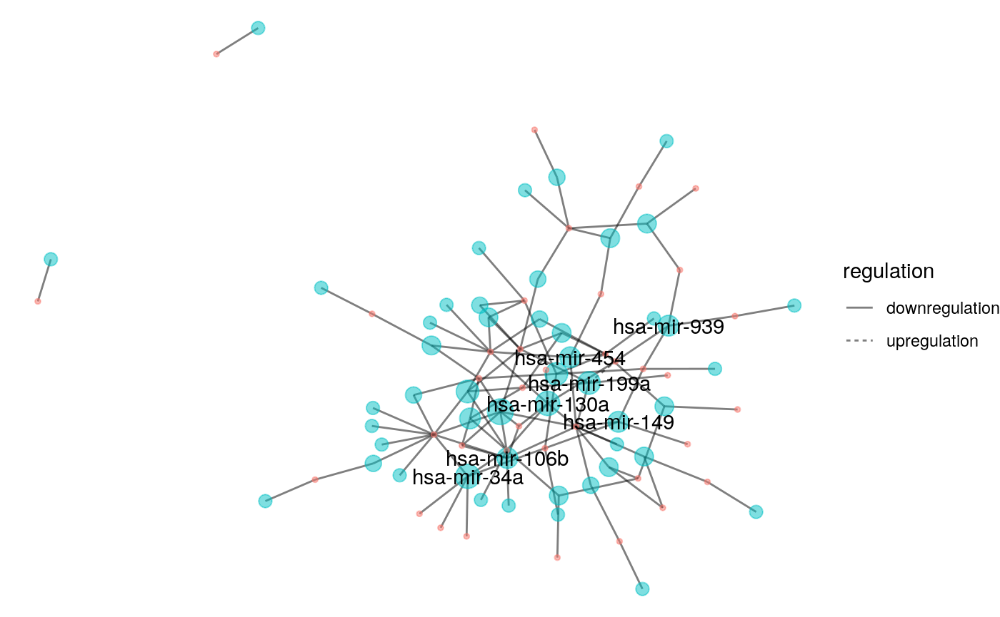

library(miRminer) library(tidygraph) #> #> Attaching package: 'tidygraph' #> The following object is masked from 'package:stats': #> #> filter library(stringr) library(ggraph) #> Carregando pacotes exigidos: ggplot2
Let’s get the miRNA-target network for Coronary Artery disease and make it a tidy graph. Let’s also extract the out centrality degree of each node, and specify when a node is a miRNA or a gene.
cad_tab <- get_hmdd_net("Coronary Artery Disease") #> Processing the request... cad_graph <- as_tbl_graph(cad_tab, directed = TRUE) %>% mutate( out_centr = centrality_degree(mode = "out"), type = ifelse(str_detect(pattern = "hsa", name), "miRNA", "Gene") )
Now let’s plot it, emphasizing the largest centralities!
cad_graph %>% ggraph(layout = "kk") + geom_edge_fan(aes(linetype = regulation), alpha = 0.5) + geom_node_point(aes(size = out_centr, color = type), alpha = 0.5, show.legend = FALSE) + geom_node_text(aes(label = ifelse((out_centr >= 4), name, NA)), check_overlap = TRUE) + theme_void() #> Warning: Removed 75 rows containing missing values (geom_text).
